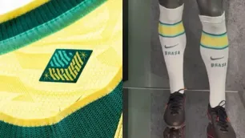

STF limita penduricalhos a até 35% do teto do funcionalismo público
Brasil pode economizar R$ 186,4 bilhões com regras mais rígidas de supersalários
-
Entenda as novas regras do STF para os "penduricalhos"
Kassab e Tarcísio não se falaram antes de presidente do PSD deixar governo, relatam aliados
Kassab diz que PSD deve definir pré-candidato ao Planalto até terça-feira
Irã reforça defesas na Ilha de Kharg para possível ataque terrestre dos EUA
Irã reforça defesas na Ilha de Kharg para possível ataque terrestre dos EUA

Enquete: maioria esmagadora é contra "Brasa" no uniforme da Seleção; vote
Mbappé exalta amistoso com Brasil e diz estar pronto para ser titular